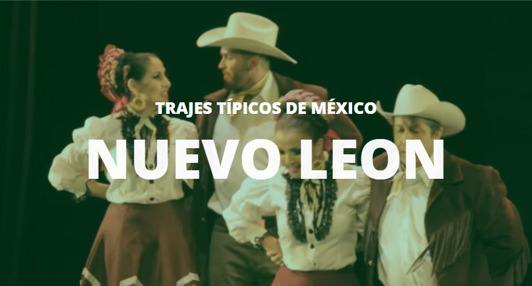
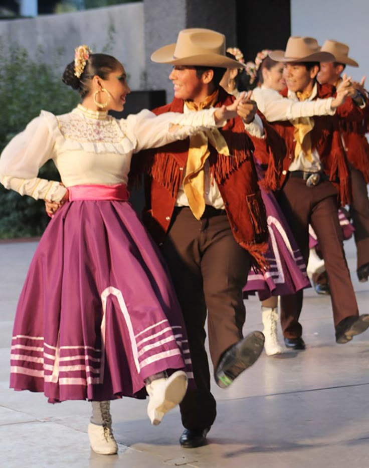
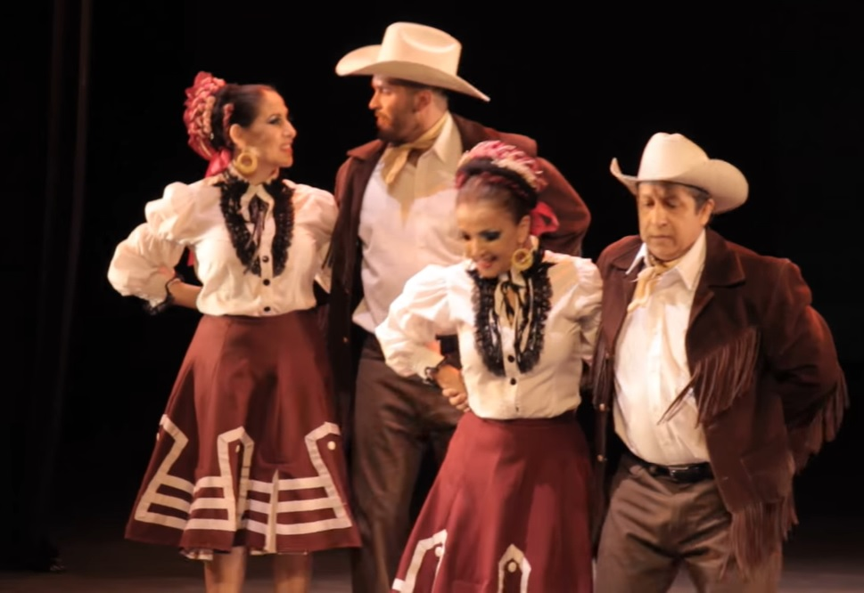

VESTIMENTA
Introduccion
La vestimenta tradicional de Nuevo León se caracteriza por ser práctica y funcional, reflejando la vida rural y el trabajo en la agricultura y ganadería de la región. Para los hombres, la vestimenta incluye una camisa de manta, pantalón de manta o lino, y una "cuera" o chaqueta de cuero. Para las mujeres, se destaca el uso de faldas amplias, blusas de manta y rebozos, así como fajas y chincuetes.
Hombre
- Camisa de manta: prenda esencial para el trabajo en el campo, generalmente de algodón.
- Pantalón de manta o lino: también de algodón o lino, dependiendo de la disponibilidad y el clima.
- "Cuera": chaqueta de cuero con flecos, utilizada para protegerse del frío y el sol.
- Botines o huaraches: calzado tradicional para el trabajo y la vida cotidiana.

Mujeres
- Faldas amplias: faldas de algodón o lino, que pueden ser de colores o estampados.
- Blusa de manta: camisa de algodón o lino, generalmente de manga larga.
- Rebozo: prenda para protegerse del frío, del sol y también para adornar el atuendo.
- Faja y chincuete: accesorios para sujetar la falda y adornar la cintura.
- Huaraches: calzado tradicional para el trabajo y la vida cotidiana.
